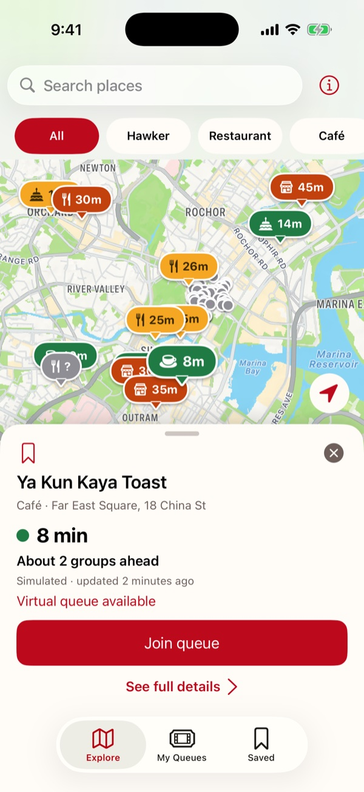
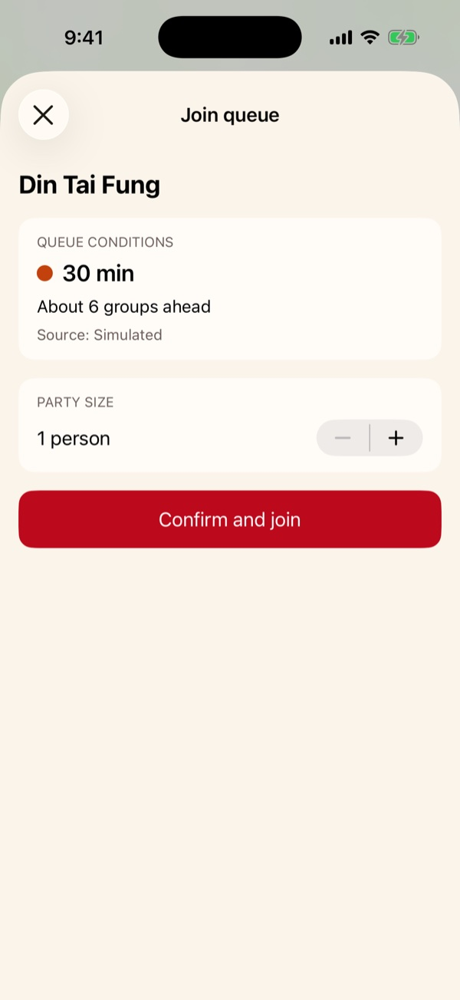
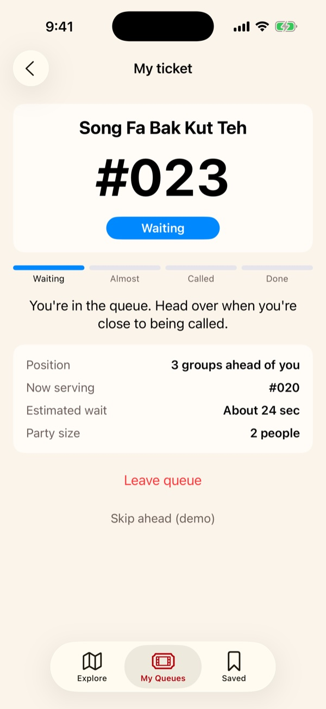

You queue first, then find out
By the time you know it's 50 minutes, you've already been standing there for 20.
Kiasu Kakis: the wait is on the map before you leave your seat.
Your kiasu buddy for queues
See the wait before you walk over. Join the queue from your phone. Eat when it's your turn.
For iPhone, iOS 17 and later. Made in Singapore.

Simulated waits at real places (demo data, see the note below)
The problem
By the time you know it's 50 minutes, you've already been standing there for 20.
Kiasu Kakis: the wait is on the map before you leave your seat.
You get the address and opening hours. Nobody tells you how long the line is, or whether it's even worth it.
Kiasu Kakis: opens on queues, not places. Food spots only, ranked shortest first.
Walk off to see another stall and your place is gone. That's why everyone stands guard.
Kiasu Kakis: join from your phone. Sit down, shop, scroll. We'll tell you when it's close.
How it works
Colour-coded pins show the wait in minutes. Green is quick, orange means go for a walk first.
Pick your party size and tap join. You get a virtual ticket, so you can sit, shop or scroll.
Watch the ticket move: waiting, almost, called. You walk in. No need to kiasu.




Feature tour
Opens on queues, not places. Colour-coded pins show the wait in minutes, and only food places appear.
Honest note: the places are real, but the queues are simulated for this demo, because there is no public Singapore queue data. The app is built so real data can slot in later.
Why use it
See the wait on every pin and skip the lines that aren't worth it.
Hawker, restaurant, café, dessert and bar. No malls, no shoe shops, no clutter.
Join from your phone and go do something else. Your ticket moves without you.
Two queues at a time and one per place, so nobody hogs every line.
VoiceOver, big text, high contrast and Reduce Motion are all supported.
Queues are simulated for now. The app is ready for real restaurant data to plug in.
Kiasu Kakis isn't on the App Store yet. Want to try it now? Run it yourself from the code.
kiasu kakis.xcodeproj in Xcode 26.Secrets.example.xcconfig to Secrets.xcconfig and add a Google Places API key.